Екран Към призовкар съд за разнасяне дава възможност за търсене и преглед на призовки, съобщения и уведомления в статус Изготвен за призовки/съобщения на текущия съд или статус Получен за приетите от друг съд призовки съобщения.
При първоначално зареждане на екран Към призовкар съд за разнасяне е не се визуализират резултати. При директно натискане на бутон Филтрирай, се извеждат всички данни в системата призовки/съобщения/уведомления, които трябва да бъдат насочени към съответен призовкар за разнасяне. Наборът от данни може да бъде филтриран, в зависимост от въведените критерии в полетата в горната част на екрана. В меню Към призовкар съд за разнасяне може да бъдат използвани следните филтри:
От дата приемане - До дата приемане – избира се дата от и до за определяне на период, в който е изпратена призовката/съобщението за обработка;
От дата изготвяне - До дата изготвяне – избира се дата от и до за определяне на период, в който е изготвен призовката/съобщението;
Статус – избира се статуса на документа;
За връчване от – избира се името на призовкаря от падащ списък, от който ще се обработва призовката.
След натискане на бутон Филтрирай резултатите се извеждат в долната половина на екрана в табличен вид:
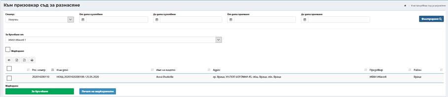
При маркиране на чекбокс Маркиране се отваря допълнително поле за въвеждане/сканиране на баркод на призовката, което дава възможност за бързо селектиране на призовките със съответните номера.
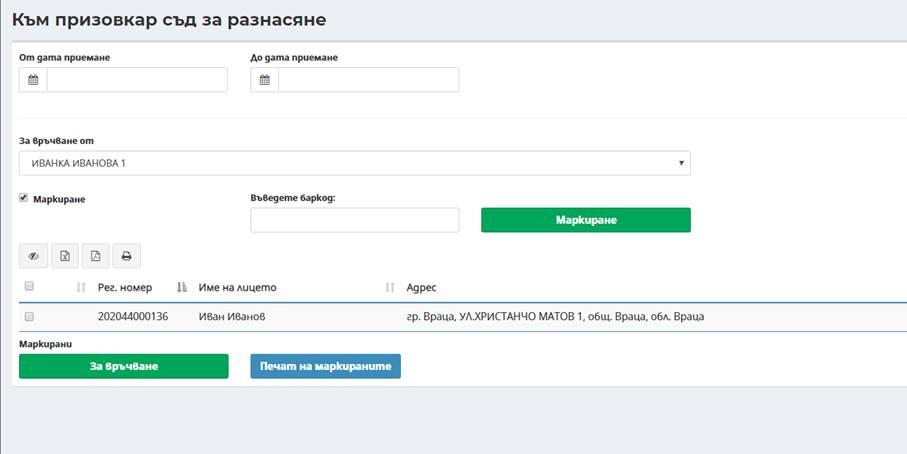
За всеки избран/маркиран запис в таблицата е възможно извършване на допълнителни действия. Действия с призовки/съобщения за насочване към призовкар за обработка и разнасяне се извършва през функционалностите достъпни посредством следните бутони:
· Бутон За връчване;
· Бутон Печат на маркираните.
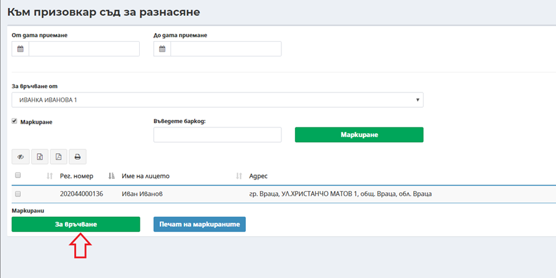
Посредством избор на бутон За връчване за всички маркирани призовки се променя статуса За Връчване от съответния призовкар. След трансфер на данните към мобилното приложение на призовкар, са достъпни за обработка през мобилното приложение. Ако в съответния съд не се използва мобилно приложение, то данните по отношение на посещаване на адреси и известяване се въвеждат през ЕИСС под-меню Призовки съобщения в текущ съд или Призовки съобщения изготвени в др. съд. За дата на промяна на статуса в За връчване се попълва текущата дата и час от системата, а статуса на призовките се променя от Изготвен/Получен на За връчване.
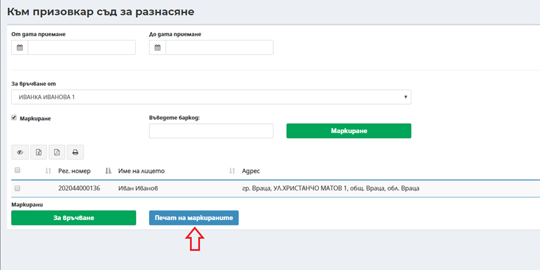
Посредством избор на бутон Печат на маркираните може да се генерира файл за едновременен печат на всички маркирани призовки/съобщение. В зависимост от настройките на браузера, файлът се сваля локално или се отваря в програма визуализираща pdf формат, след което призовките могат да бъдат разпечатани.
Мобилното приложение на ЕИСС може да работи на мобилни устройства тип смартфон или таблет. За оптимална работа на мобилното приложение за призовкари на ЕИСС, Вашето устройство трябва да покрива следните минимални технически изисквания.
• Свободно място за инсталиране на мобилното приложение и поддръжка на 5000 призовки – 1GB;
• Камера – 8MP;
• Памет – 2GB.
• Операционна система Android версия 7.0.
Не е необходимо устройството да е снабдено със СИМ карта.
2. Инсталиране на мобилно приложение за призовкар и сдвояване на устройства
От меню „Управление“, подменю „Уведомяване“, секция „Мобилно приложение“, се изтегля APK файл за мобилното приложение за призовкар.
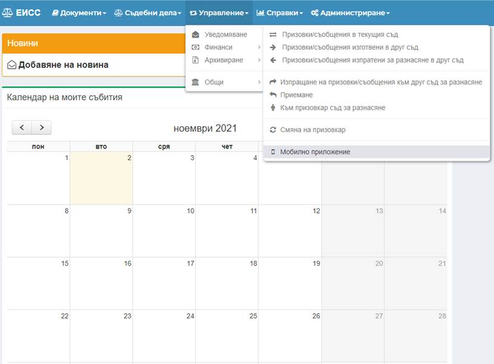
Файлът се инсталира на мобилното устройство и се изпълняват следващите стъпки:
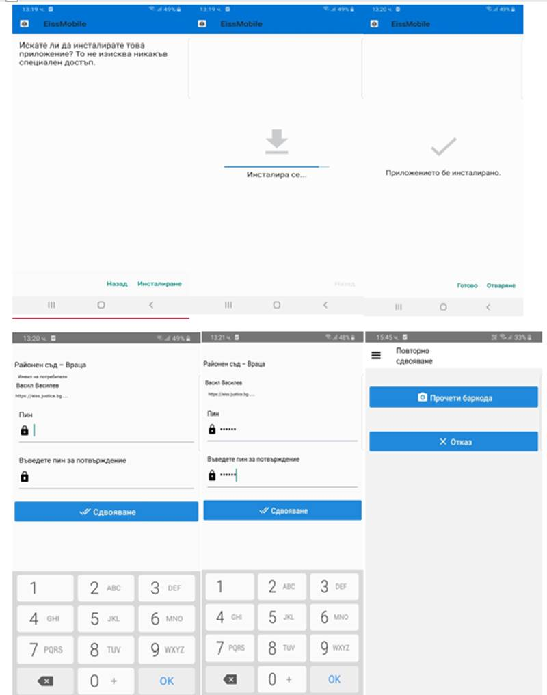
След инсталирането на мобилното приложение се влиза в Меню „Администриране“, подменю „Номенклатури“, секция „Потребители“ в ЕИСС:
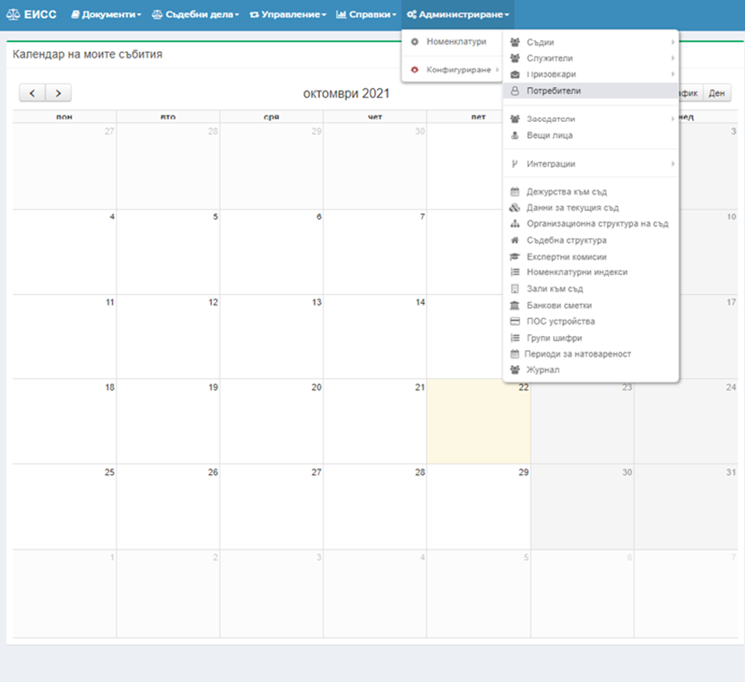
Избира се бутон „Добави“, след което на екрана в ЕИСС се визуализира генерирания QR код за сдвояване на мобилното устройство с потребителския профил на призовкаря в ЕИСС.
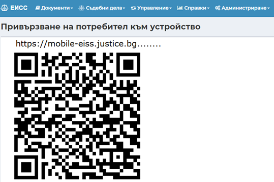
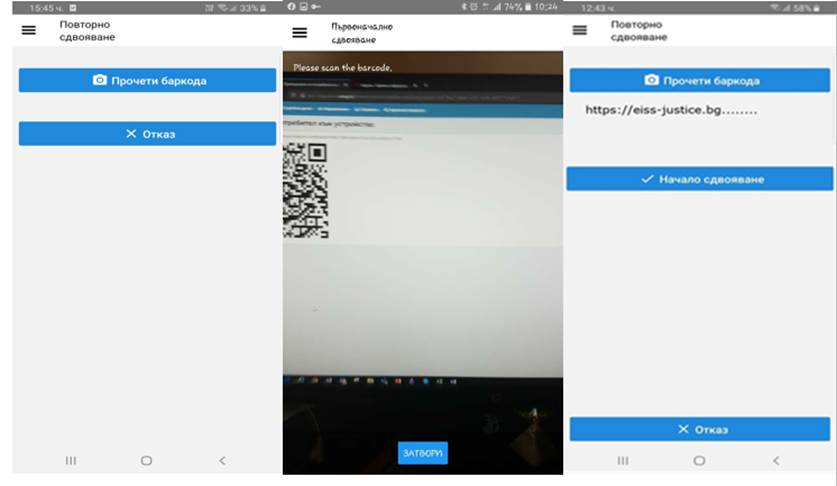
След сдвояване на устройството се задава парола за достъп до мобилното приложение, която се използва при синхронизиране на данни между ЕИСС и мобилното устройство.
Важно: За да се осъществи сдвояването на мобилното устройство с профила в ЕИСС, то трябва да е свързано с мрежата на съда ( Wi-fi).
Сдвояването на мобилното устройство е еднократно.
3. Изтегляне на призовки/съобщения/уведомления за връчване от призовкар
Изтегляне на призовки от ЕИСС към мобилното приложение – Условия за изтегляне на призовки:
ü За да се осъществи трансфер на данни от ЕИСС към мобилното приложение, мобилното устройство трябва да е свързано с мрежата на съда ( Wi-fi).
ü За да се трансферират призовки от ЕИСС към мобилното приложение, те трябва да са в статус „За връчване“ или да е отразено посещение. Не се трансферират призовки в краен статус (Връчена/Невръчена).
3.1 Смяна на статуса на призовките
3.1.1 От Меню „Управление“, модул „Уведомяване“, подмодул „Към призовкар съд за разнасяне“ се сменя статуса на призовката.
3.1.2 От филтъра за статус се избира статус на призовките (Изготвен, Изпратено, Получен). След като се избере един от тези статуси се натиска бутон „Филтриране“.
3.1.3 От филтър „За връчване от“ се избира призовкаря, на чиито призовки ще се сменя статуса.
Визуализира се списък на всички призовки в избрания статус.
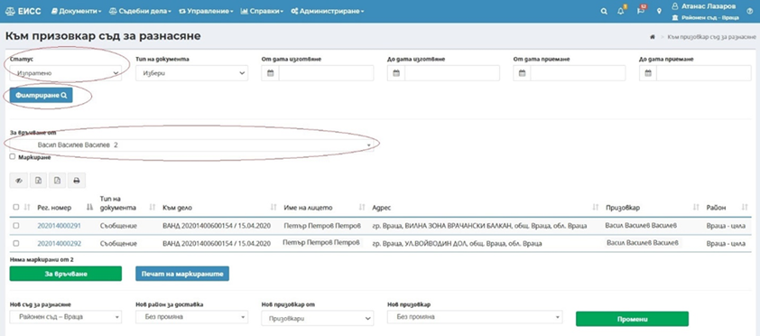
След като сме изпълнят описаните стъпки трябва да се маркират избраните призовки и да се избере бутон „За връчване“.
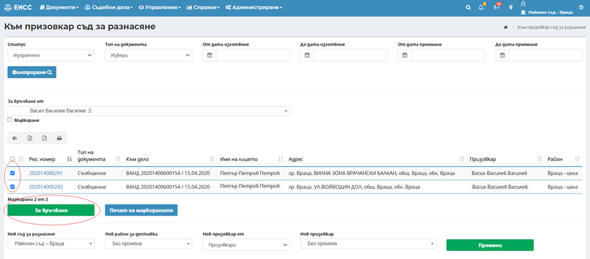
След като статуса на призовките е сменен те вече могат да се трансферират в мобилното приложение.
Визуализират се приетите призовки, изтеглят се както създадените в текущия съд призовки, така и тези, които са изготвени в друг съд, но ще се разнесат от призовкаря на текущия съд.
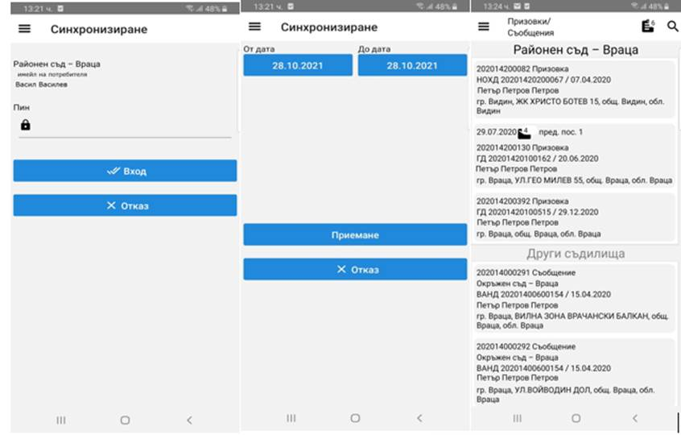
На екрана в мобилното приложение на съответната призовка се визуализира икона
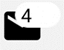
, която показва преди колко дни е отразено предходното посещение на адреса.До иконата за брой дни се извежда и икона
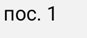
, която показва кое по ред е последното посещение за връчване на конкретната призовка.След успешно изтегляне на призовките/съобщенията/уведомленията за връчване, Призовкарят може да излезе от мрежата на съда и да премине към разнасянето на книжата.
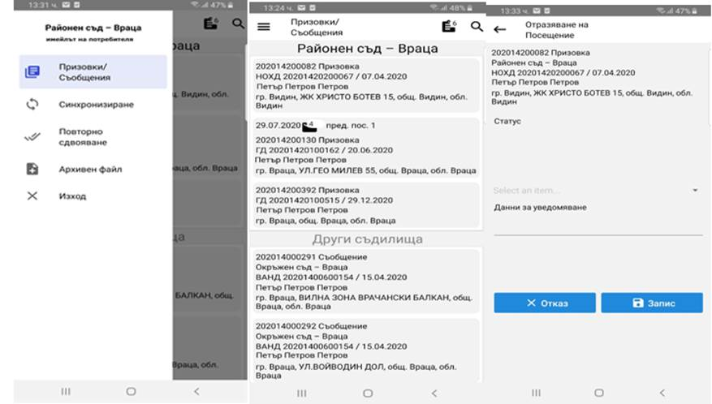
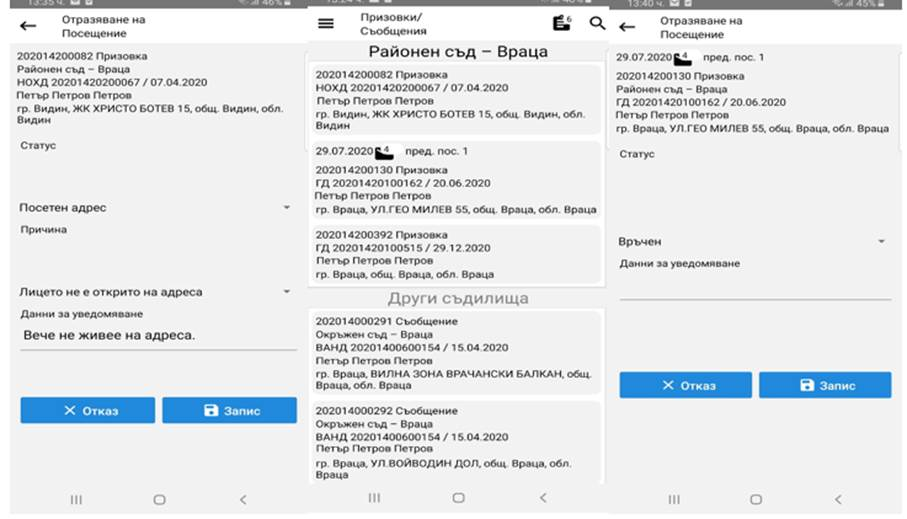
Приложението показва, колко призовки са разнесени и могат да се изпратят към ЕИСС.
След трансфера приложението се връща на екрана за приемане на призовки.
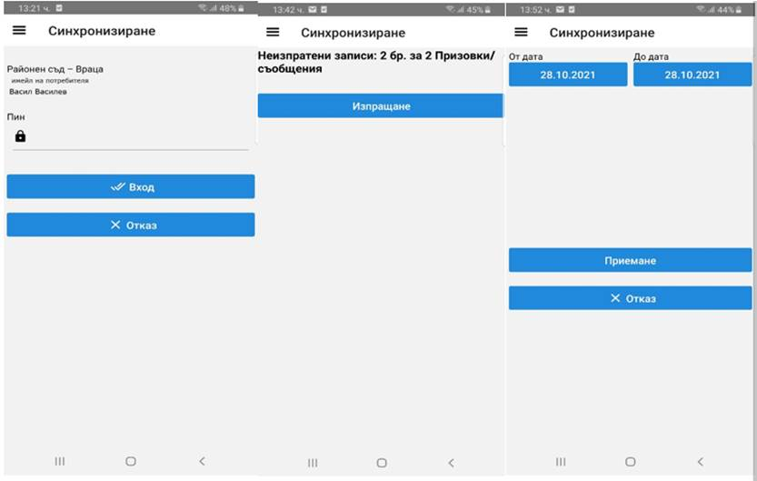
Ø Преди трансфера
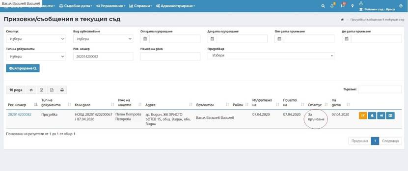
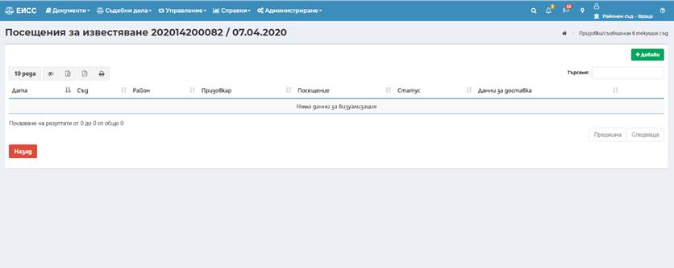
Ø След трансфера:
След трансфера статуса на призовките в системата и резултата от посещението се променя съгласно данните от мобилното приложение.
Статусът се променя след всяко отразено посещение.
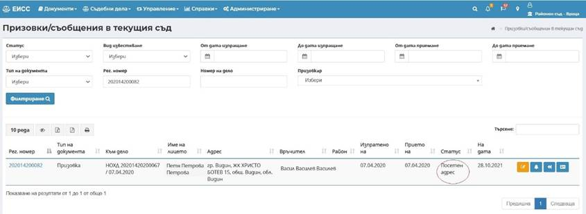
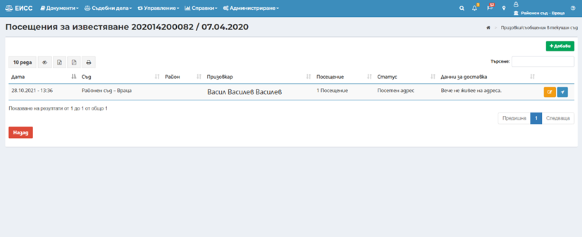
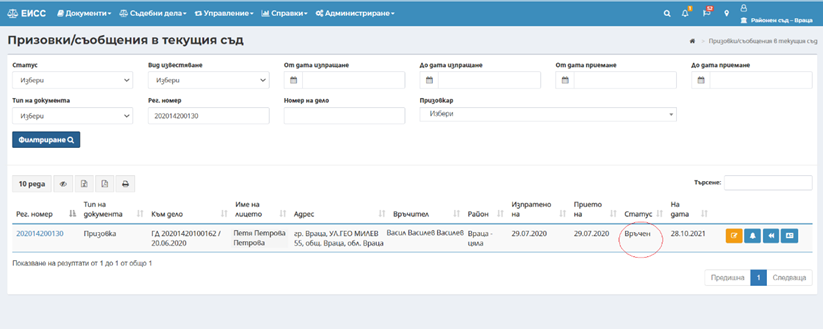
След, приключване на трансфера, може да се премине към повторно изтегляне на призовки. От ЕИСС към мобилното приложение ще се трансферират само не връчените призовки.
Процесът се повтаря докато има призовки за разнасяне.